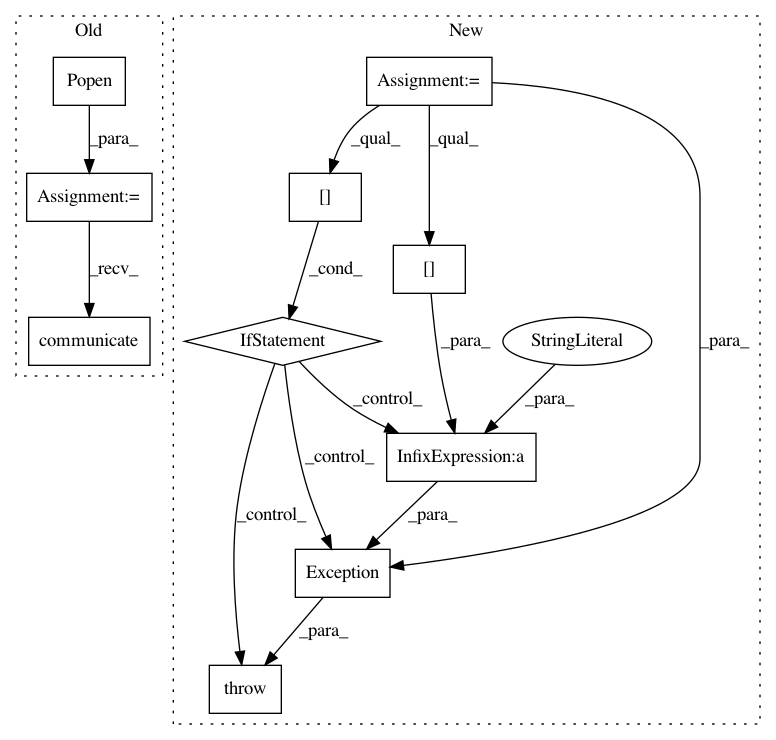

c2cd01e5245aa7f2d33dfc47794d578c62a5d81e,perfkitbenchmarker/kubernetes/kubernetes_virtual_machine.py,KubernetesVirtualMachine,_CreateService,#KubernetesVirtualMachine#,128
Before Change
create_cmd = [FLAGS.kubectl, "--kubeconfig=%s" % FLAGS.kubeconfig,
"create", "-f", "-"]
create_svc_body = self._BuildServiceBody()
process = Popen(create_cmd, stdout=PIPE, stdin=PIPE, stderr=STDOUT)
output = process.communicate(input=create_svc_body)
logging.info(output[0].rstrip())
@vm_util.Retry(poll_interval=10, max_retries=100, log_errors=False)
def _WaitForPodBootCompletion(self):
After Change
"create", "-f", "-"]
create_svc_body = self._BuildServiceBody()
output = vm_util.IssueCommand(create_cmd, input=create_svc_body)
if output[EXIT_CODE]:
raise Exception("Creating Service failed: %s" % output[STDERR])
logging.info(output[STDOUT].rstrip())
@vm_util.Retry(poll_interval=10, max_retries=100, log_errors=False)
def _WaitForPodBootCompletion(self):
In pattern: SUPERPATTERN
Frequency: 3
Non-data size: 10
Instances
Project Name: GoogleCloudPlatform/PerfKitBenchmarker
Commit Name: c2cd01e5245aa7f2d33dfc47794d578c62a5d81e
Time: 2015-09-21
Author: mateusz.blaszkowski@intel.com
File Name: perfkitbenchmarker/kubernetes/kubernetes_virtual_machine.py
Class Name: KubernetesVirtualMachine
Method Name: _CreateService
Project Name: GoogleCloudPlatform/PerfKitBenchmarker
Commit Name: c2cd01e5245aa7f2d33dfc47794d578c62a5d81e
Time: 2015-09-21
Author: mateusz.blaszkowski@intel.com
File Name: perfkitbenchmarker/kubernetes/kubernetes_virtual_machine.py
Class Name: KubernetesVirtualMachine
Method Name: _CreateSecret
Project Name: GoogleCloudPlatform/PerfKitBenchmarker
Commit Name: c2cd01e5245aa7f2d33dfc47794d578c62a5d81e
Time: 2015-09-21
Author: mateusz.blaszkowski@intel.com
File Name: perfkitbenchmarker/kubernetes/kubernetes_virtual_machine.py
Class Name: KubernetesVirtualMachine
Method Name: _CreatePod